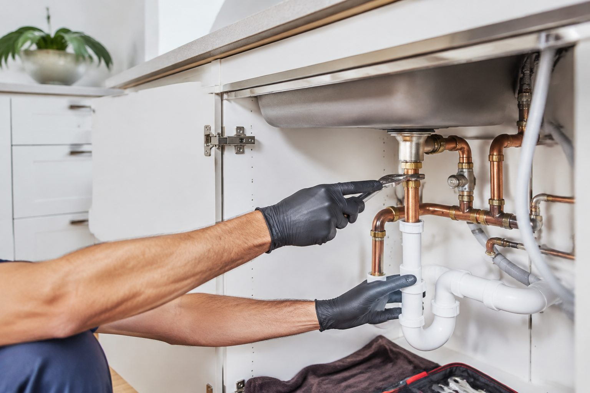
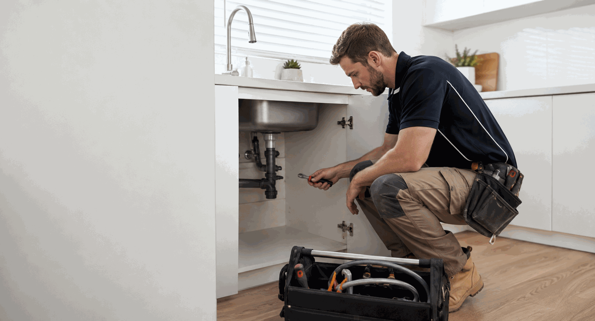

Location
State the property address or suburb, affected room and fixture. For apartments, include the unit number and any access requirements.
Ellis Services Group provides plumbing repairs and installation across Perth, including blocked drains, water leaks, hot water, taps, toilets and fixture connections. Our local team assesses the work, explains the repair or installation plan and provides a written quote before agreed work proceeds.
Call 0413 477 667Include the fixture type, room and whether the leak is constant or only appears when the tap or appliance is used.
Slow drainage, gurgling or water returning through another fixture are useful observations. Avoid repeatedly adding chemical drain cleaners.
Note whether a toilet can still be used, whether water is reaching the floor, and which taps are affected by a pressure change.
Share the unit location, symptoms and any visible model information that can be read safely. Do not remove covers or handle wiring.

For rental, strata or managed commercial properties, include the work-order reference, approval contact, occupant details, access arrangements and any known history.
Plumbing problems can appear as a visible drip, a fixture that will not stop running, slow drainage, low pressure, no hot water or moisture where it should not be. A clear description helps place the enquiry with the right information from the outset.
For an active leak, protect people and property only where it is safe to do so. Keep clear of wet electrical equipment, do not remove panels or fittings, and call 000 if there is immediate danger.

State the property address or suburb, affected room and fixture. For apartments, include the unit number and any access requirements.
Describe when it began, whether water is active or intermittent, and whether the issue occurs only when a fixture is used.
Mention any water near electrical equipment, visible damage or spreading water. Do not investigate a hazard simply to provide more detail.
Use these categories to describe the issue. You do not need to identify the cause before making contact.
Ellis Price Guide
Ellis Price Guide ranges for common standard-hours, standard-scope plumbing work.
AUD $275–$550
per repair · incl. GST
AUD $275–$990
per repair · incl. GST
AUD $198–$605
per repair · incl. GST
AUD $198–$660
per repair · incl. GST
AUD $165–$420
per repair · incl. GST
AUD $165–$330
per repair · incl. GST
Guide conditions: These AUD ranges are for standard-hours, standard-scope work and are incl. GST. Access, materials, extra pipe, cable or circuit work, compliance work, emergency or after-hours work and unforeseen repairs are confirmed in a written quote before work proceeds.
Water beneath a sink, beside a fixture, along a wall or below a ceiling. Tell us where it appears and whether it is active.
Water leak detection →Slow outlets, gurgling, a blocked basin, shower or sink, or water returning through another fixture.
Discuss drainage →No hot water, reduced temperature, inconsistent flow or visible water near the unit. Keep panels and electrical components untouched.
Discuss hot water →Dripping taps, leaking handles, low pressure at one fixture or a fitting that no longer works as expected.
Tap and mixer repairs →A toilet that keeps running, leaks to the floor, fills slowly or cannot be used normally.
Toilet repairs →Include the work-order reference, access instructions, approval contact and any information from the occupant.
Property-management details →Share the property location, what you can see and when it started. Photos are useful only when they can be taken safely.
We use the address, access contact and service category to arrange an on-site plumbing assessment and confirm the repair plan and written quote.
For managed properties, add the work order and approval contact so the relevant details travel with the request.
For a slow outlet or wastewater returning through fixtures, start with drainage. Water appearing outside a pipe or fitting belongs with leak assessment; a known damaged pipe belongs with pipe repair. A shower leak may involve plumbing, seals or waterproofing, so the source needs assessment before any repair is agreed. Low pressure at one tap is different from a whole-property supply change. Tell us which outlets are affected rather than assuming that every problem needs pipe replacement.
The written quote identifies the agreed investigation or repair, included materials and relevant access work. The published AUD ranges are guides for standard-hours, standard-scope work, not a fixed quote for an unseen property. Ask which additional work would require further approval.
Describe whether the leak appears during use and which outlets have changed. The assessment separates a plumbing fault from other causes, such as waterproofing or a supply issue. Specialist or additional work is confirmed separately, not assumed from a symptom.
Routine service hours: 09:00–21:00, seven days a week. 24-hour emergency repairs are available; call to confirm attendance arrangements and the quoted emergency work. No arrival time is guaranteed. Emergency fees follow the quoted work plan. Utility faults and immediate danger use the appropriate official channel first.
Routine service hours: 09:00–21:00, seven days a week. 24-hour emergency repairs are available; call to confirm attendance arrangements and the quoted emergency work. No arrival time is guaranteed. Emergency repair fees follow the quoted work plan. For urgent work, call rather than relying on an online enquiry.
Use appropriately authorised plumbing trades for regulated fixed-water and drainage work; confirm the specific task and documentation. Read the explanation.
Photos are optional: email safely taken photos to maxinemaintenance.au@outlook.com. You can contact us without photos. Do not approach a hazard or dismantle equipment to take them.
Use the plumbing price overview as a starting point, then compare the work included in the written quote. Finding a concealed leak, repairing an accessible fitting and replacing equipment are not the same job. A repair-only amount should not be compared with a quote that also includes supply, access and restoration.
Ask about the initial attendance or investigation charge, materials, included work and what needs separate approval. Confirm any charge for a visit where you do not proceed, and any different hours or access arrangements, before booking. The guide does not establish an hourly rate, a free call-out or an after-hours price.
Choose the region for the property, then describe the plumbing task. These guides organise service enquiries; they are not separate branches or a promise of an arrival time. Tell the team the address and access requirements so the proposed visit can be confirmed.
Describe problems with fixed water or drainage installations, leaking fittings, toilets or hot-water plumbing. The team confirms the regulated work and appropriate authorisation for the actual scope. A general repair enquiry does not automatically include gas fitting or every appliance repair.